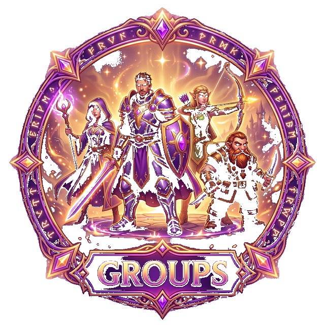

A practical way to make Bible memory more active and repeatable.
VerseBattles is a browser-based Scripture game that can help Christian schools create a stronger rhythm of Bible engagement without beginning with a large technology rollout.
Students answer Bible prompts in order to move and progress.
It can be used in Bible class, clubs, or chapel follow-up.
The school can test it quickly in the browser before wider decisions.
Best first question: does this help students return to Scripture more willingly during the week, not only in one impressive demonstration?
Where it may fit
Bible class reinforcement
Short warm-up before class
Memory-verse follow-up after teaching
Active repetition beyond recitation alone
Clubs and houses
Scripture clubs or discipleship groups
Inter-house competitions with Bible content at the center
Chapel follow-up
Extend the week's theme beyond one sermon moment
Help students revisit the passage more than once
Why the format helps
VerseBattles offers more than one Scripture activity path, which makes it easier to test in real school rhythms.
Solo
Missions
Learn
Multiplayer

GroupsA sensible first pilot
Start with one class, one club, or one chapel follow-up group.
Use the real devices students and staff would actually rely on.
Watch whether students understand it quickly and return for a second session.
What success would look like
Students come back to Scripture more often, with more attention, and with less prompting.